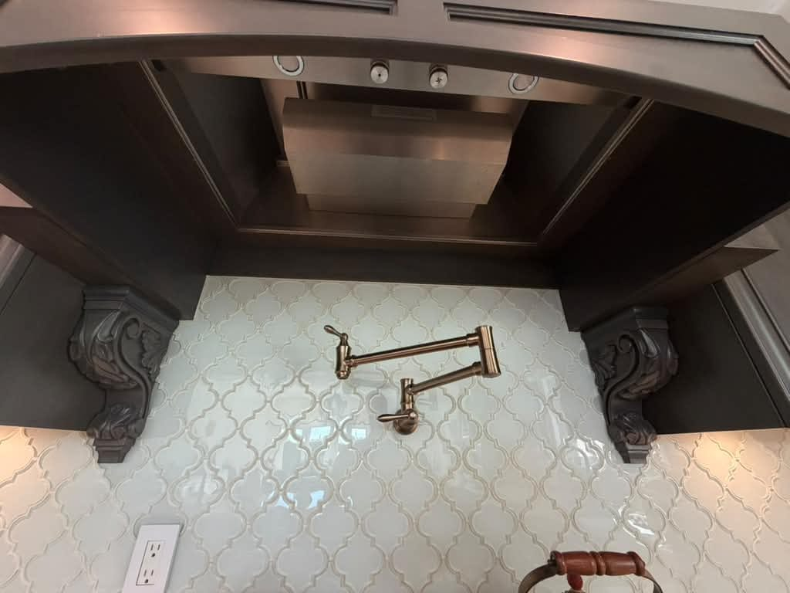
Appliance Repair in Irvine, CA
Same-day service across Woodbridge, Northwood, Turtle Rock, Great Park, and every Irvine neighborhood. All major brands. Licensed & insured.
5.0 · 160 Google reviewsMon–Sat, 8am–7pm. Two-hour arrival window. The technician calls before arriving.
See neighborhoods and ZIP codes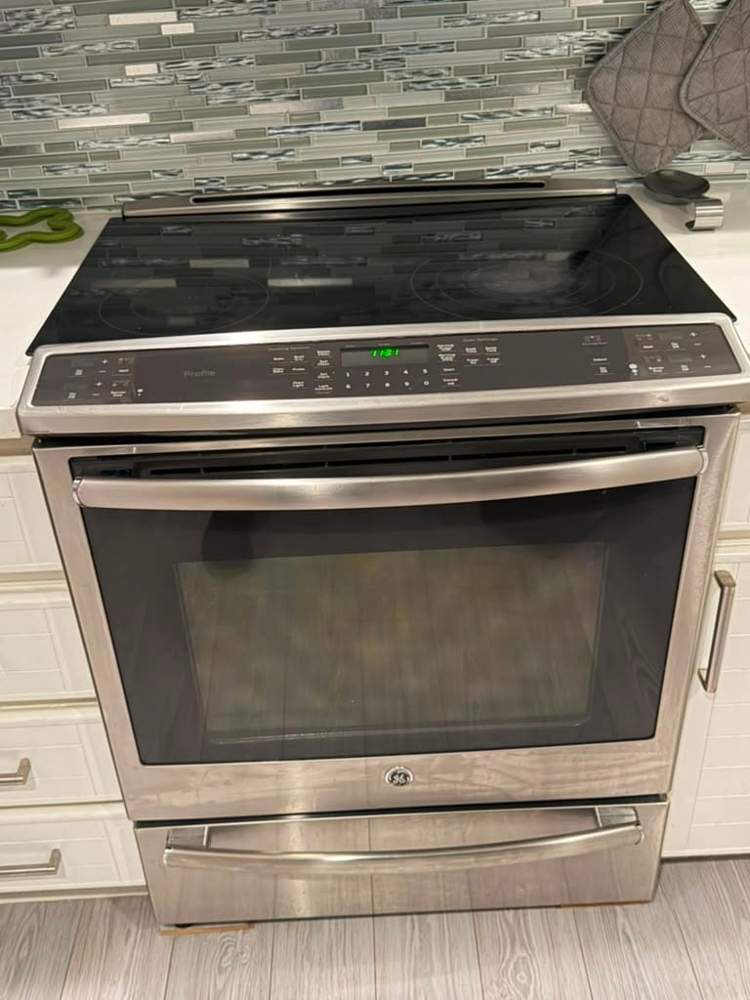
What to expect
- Flat $99 diagnostic feeApplied toward the repair if you approve the work.
- Written quote firstItemized, before any work starts.
- 90-day parts, 30-day laborWarranty on every repair.
- Same-day serviceCall or request online.
Family-owned since 2017 · Licensed, bonded & insured
Recent Repairs in Irvine
Real jobs completed by our technicians in Irvine homes, including a Frigidaire dishwasher not-draining repair.
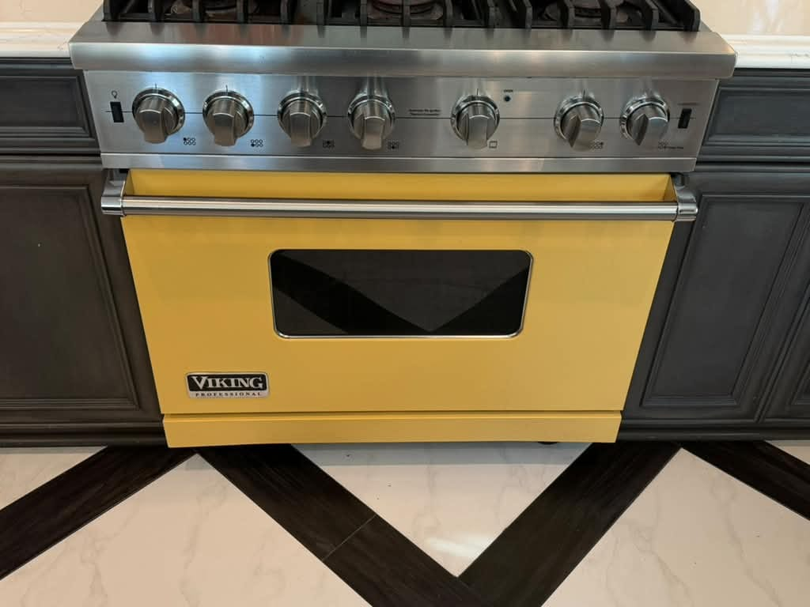
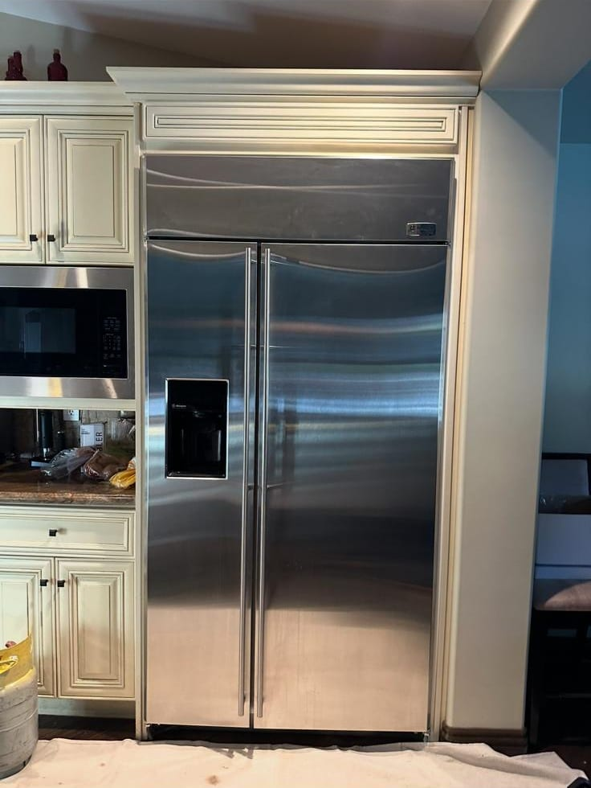
GE Monogram · Refrigerator · Irvine, CA
Control Board & Thermistors Replaced
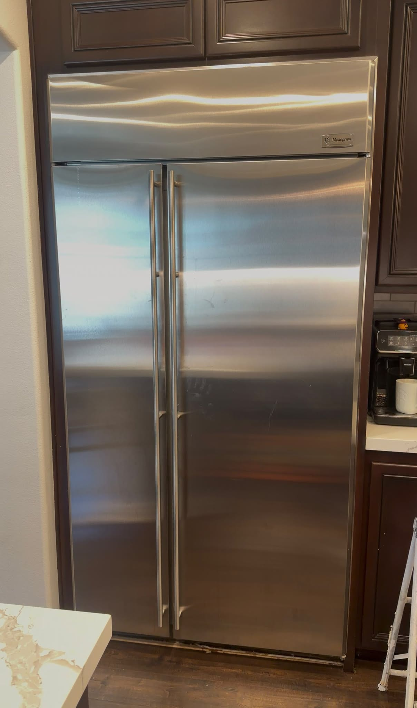
GE Monogram · Refrigerator · Irvine, CA
Condenser Fan Motor Replaced
Show all 12 Irvine repairs
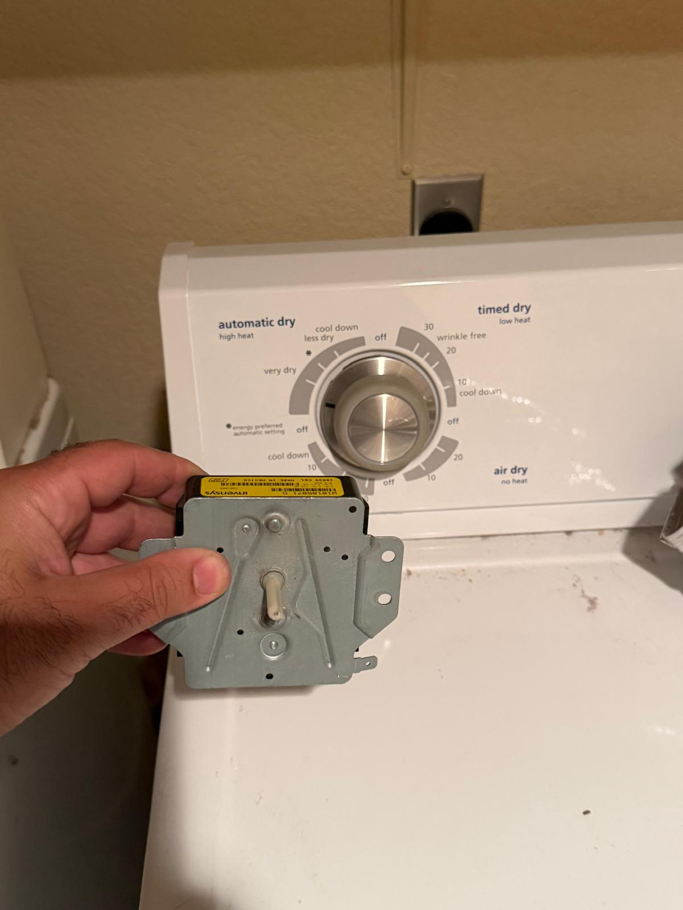
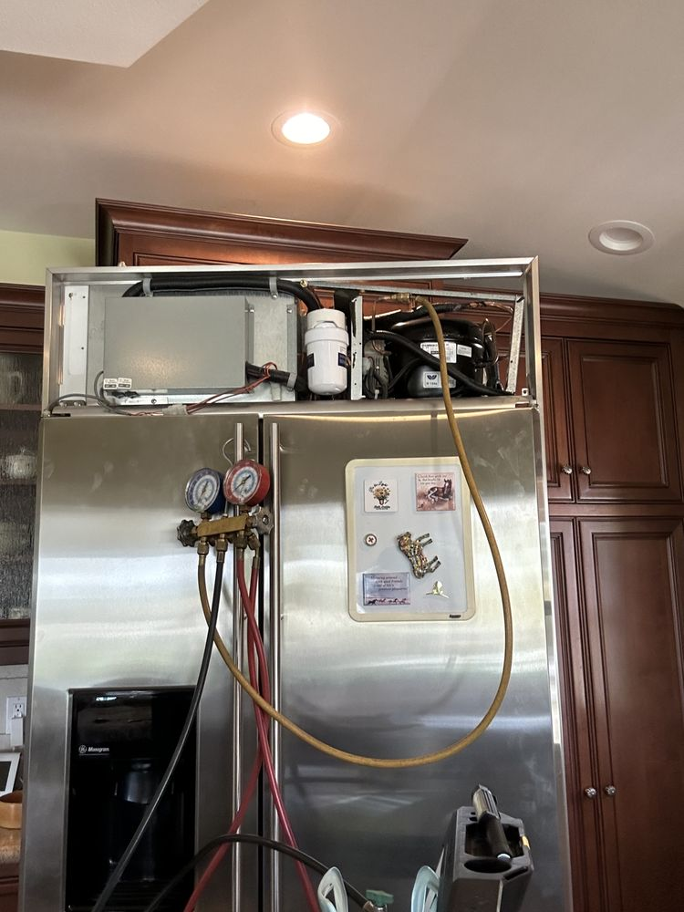
GE Monogram · Refrigerator · Orange County, CA
Built-In Refrigerator Service
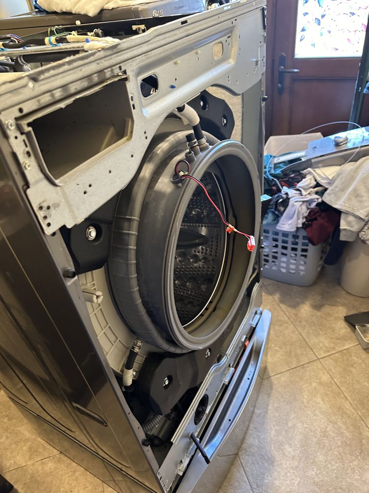
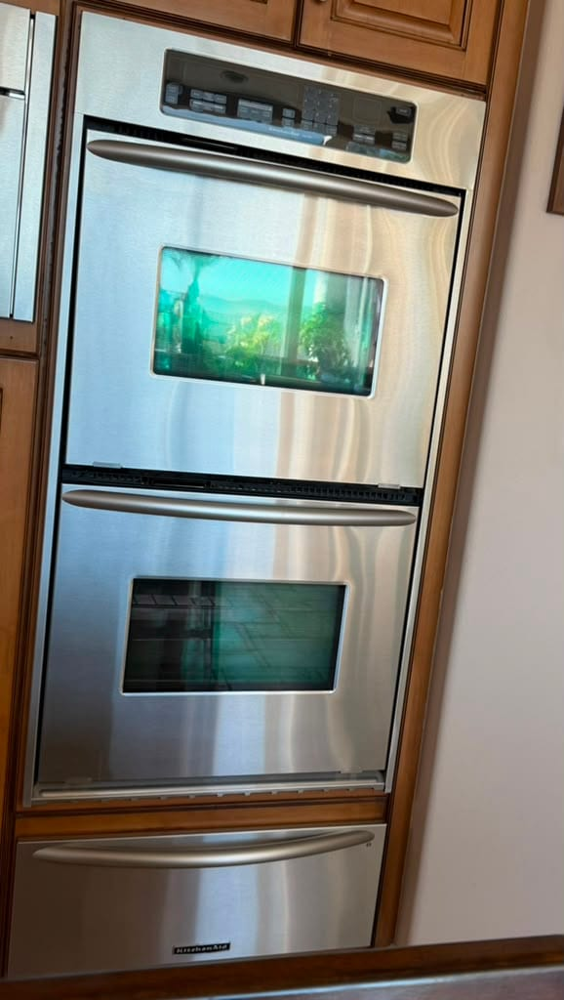
KitchenAid · Double Wall Oven · Irvine, CA
Oven Temperature Sensor Replacement
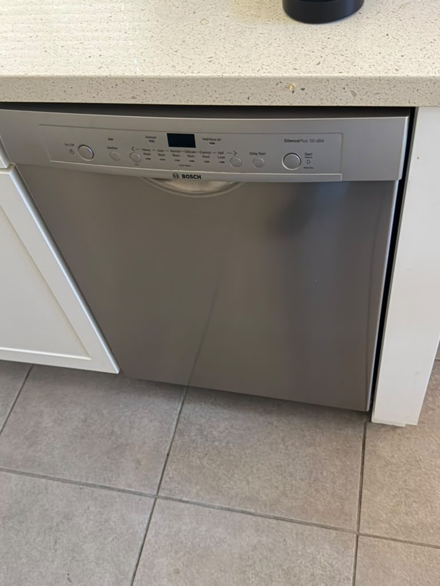
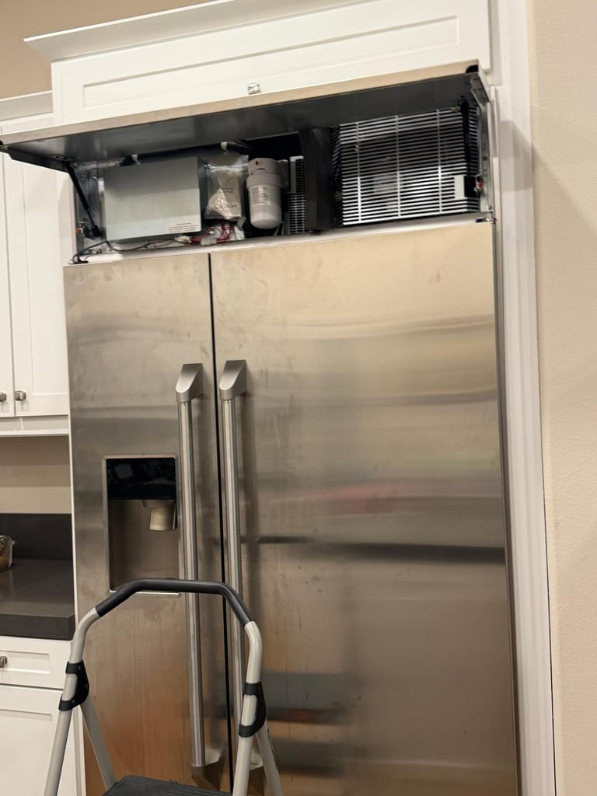
Monogram · Refrigerator · Irvine, CA
Main Control Board Replacement
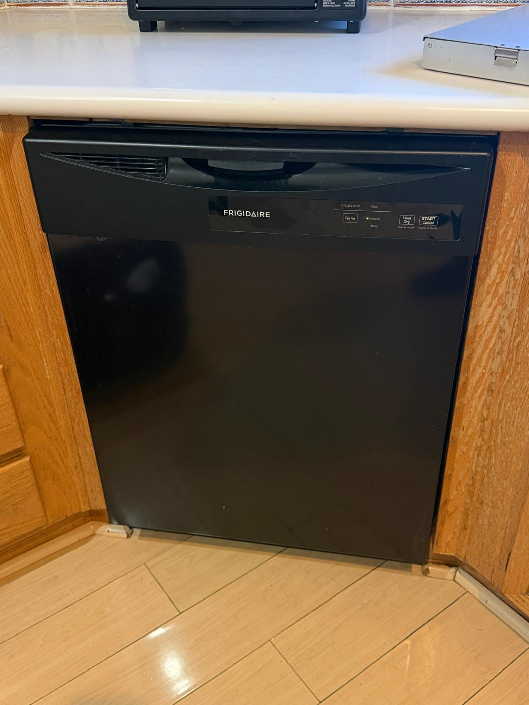
What Orange County Customers Say
From our 160 verified 5-star Google reviews
Our repairman was great! On time, personable, knowledgeable, and fixed our problem. Looking to him to repair another appliance as well. We'll be back!
We've received fast and high quality service on our dryer each time we've needed it. The repairman is courteous and clear — we will call him again when another appliance needs repair.
This guy is wonderful. Not only fixed the fridge. He took time and no rush. He cleaned everything and even before he left we heard the sound of making ice cubes. On top of that he fixed the gas flow of the burner as a courtesy. Nice guy. Very friendly and professional as well.
What We Fix in Irvine
Whether your fridge stopped cooling overnight or your dryer is taking forever to finish a load, we diagnose and fix it, usually in one visit.
Call or Request Online
Call (949) 629-5365 or submit the online form. Tell us the appliance type, brand, and the symptom.Same-Day Dispatch
We give you a two-hour arrival window. Your technician calls when they're on the way to your Irvine address.Diagnosis & Quote
The technician runs a full diagnostic and gives you a firm quote before touching anything. No surprises.Repair & Warranty
Most repairs finish in a single visit. All work carries a 90-day parts and 30-day labor warranty.
Pricing & Discounts
- $99 diagnostic fee, applied toward your repair
- 20% off labor for seniors 60+ & repeat customers.
Estimates vary by brand, part availability, and diagnosis. Full pricing guide →
Irvine Neighborhoods We Serve
From the established communities near UC Irvine to the newer Great Park developments, we send technicians to every corner of Irvine. No travel surcharges, same rates city-wide.
-
Woodbridge
ZIP 92604Established lakeside community, mix of townhomes and single-family homes.
-
Northwood
ZIP 92620Family-friendly area in northeast Irvine, newer tract developments.
-
Turtle Rock
ZIP 92603Hillside community, many homes with premium brand appliances.
-
Orchard Hills
ZIP 92602Newer master-planned community, gated enclaves, luxury builds.
-
Great Park & Beacon Park
ZIP 92618Newer construction near the Orange County Great Park.
-
Irvine Spectrum Area
ZIP 92618Mixed residential near the Irvine Spectrum Center shopping district.
-
Westpark
ZIP 92614Central Irvine, close to the business corridor.
-
University Park & Rancho San Joaquin
ZIP 92612Near UC Irvine, diverse mix of condos and homes.
-
Oak Creek
ZIP 92618Planned community with townhomes and single-family residences.
Common Appliance Issues in Irvine Homes
Irvine's master-planned communities span about three decades of construction, and newer builds create appliance failure patterns that differ from the rest of Orange County.
In Woodbridge and Turtle Rock, built largely in the 1970s–1990s, appliances are now well past the 20-year mark. Top-load Whirlpool and GE washers from that era commonly develop bearing noise and lid-switch failures. Built-in refrigerators in Turtle Rock custom homes (typically Sub-Zero or Thermador) show sealed-system issues (slow cooling, frost buildup in the freezer) that require specific diagnostic tools. These are jobs we handle routinely.
In Great Park and Orchard Hills, construction from 2015 onward brought a wave of Samsung and LG high-efficiency front-load washers. The most common complaint: door boot seal failure, which causes a musty odor and water leaking at the front. Drain pump filters clog in these models when the filter is not cleaned every few months; both are same-visit repairs. Wall ovens and integrated dishwashers from Bosch and Miele are also standard in newer Irvine builds, and our technicians carry parts for the most common failure points on each.
HOA-managed communities (Orchard Hills, Quail Hill, some Northwood gated tracts) have visitor parking procedures. We ask that you mention the community name when booking so we can coordinate gate or call-box access on arrival.
Brands we repair
Irvine kitchens run the full spectrum: Whirlpool in apartment complexes, Sub-Zero and Wolf in Turtle Rock custom homes. We service all of them. We also cover Dacor and DCS.
- Sub-Zero
- Wolf
- Samsung
- LG
- Whirlpool
- GE
- Maytag
- Frigidaire
- Bosch
- KitchenAid
- Kenmore
- Miele
- Thermador
- Viking
- Electrolux
Independent repair service. Not affiliated with or endorsed by these manufacturers; brand names and logos are trademarks of their owners. If your appliance is still under manufacturer warranty, check with the manufacturer before booking.
Irvine Service Area Details
From our base in Stanton, Irvine is a 20–30 minute drive depending on neighborhood. We reach Woodbridge and Westpark via the 5 freeway; Turtle Rock and Quail Hill are a few minutes further via Culver Drive; Great Park and Orchard Hills are accessible via the 133 or Portola Parkway. Most Irvine communities have dedicated guest parking, which our technicians use to comply with HOA vehicle rules. For gated communities, mention your unit number and gate code when booking. Same-day slots are available for calls received before noon across all Irvine villages.
Appliance repair across Irvine
Universal Appliances Repair Group Inc. provides same-day appliance repair in Irvine, California, across Woodbridge, Northwood, Turtle Rock, Quail Hill, Orchard Hills, Great Park, Beacon Park, Westpark, Oak Creek, and the Irvine Spectrum area, ZIP codes 92602, 92603, 92604, 92612, 92614, 92618, and 92620.
Many Irvine homes have built-in refrigerators, wall ovens, and integrated dishwashers from Sub-Zero, Bosch, Viking, and Miele, and we repair them routinely. We also serve nearby Tustin, Lake Forest, Newport Beach, and Costa Mesa. Call (949) 629-5365 or book online.
FAQ: Irvine Appliance Repair
Still have a question? Call (949) 629-5365.
Yes. Same-day appliance repair is available throughout Irvine when you call before noon. We dispatch from Stanton and can typically reach most Irvine neighborhoods, including Woodbridge, Northwood, and the Irvine Spectrum area, within a few hours. Call (949) 629-5365 to check same-day availability.
We serve all of Irvine, including Woodbridge (92604), Northwood (92620), Turtle Rock (92603), Orchard Hills (92602), Great Park and Beacon Park (92618), Westpark (92614), Rancho San Joaquin and University Park (92612), and Oak Creek (92618). If you live in Irvine, we come to you.
Yes. Sub-Zero, Wolf, Viking, Thermador, and Miele are among the high-end brands we service regularly in Irvine, along with Bosch built-ins. These appliances require brand-specific parts and diagnostic experience; our technicians know the common failure patterns on each platform and carry parts for most models.
From our base in Stanton, Irvine is typically a 20–30 minute drive depending on the neighborhood. For same-day calls received before noon, we aim to have a technician at your door the same afternoon. We give you a two-hour arrival window and call when the tech is on the way.
Yes. All repairs include a warranty on parts and labor. If the same issue recurs within 30 days, we return and fix it at no additional charge; replaced parts stay covered for 90 days. Ask your technician for specific warranty terms when they provide the quote.
Repair Resources for Irvine Homeowners
Guides written for appliances common in Irvine homes.
Need Appliance Repair in Irvine?
Same-day service available. All appliances, all brands. Licensed technicians, 90-day parts / 30-day labor warranty on every repair.
Call (949) 629-5365
Request a Repair
Mon–Sat, 8am–7pm